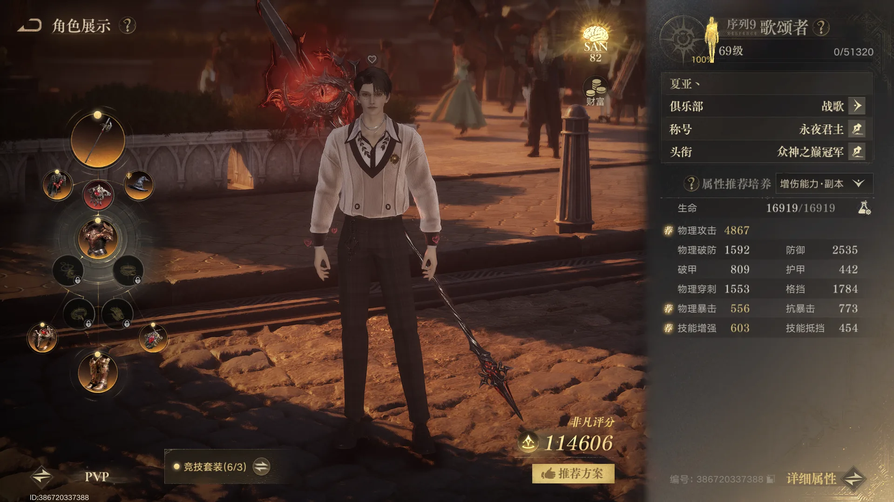
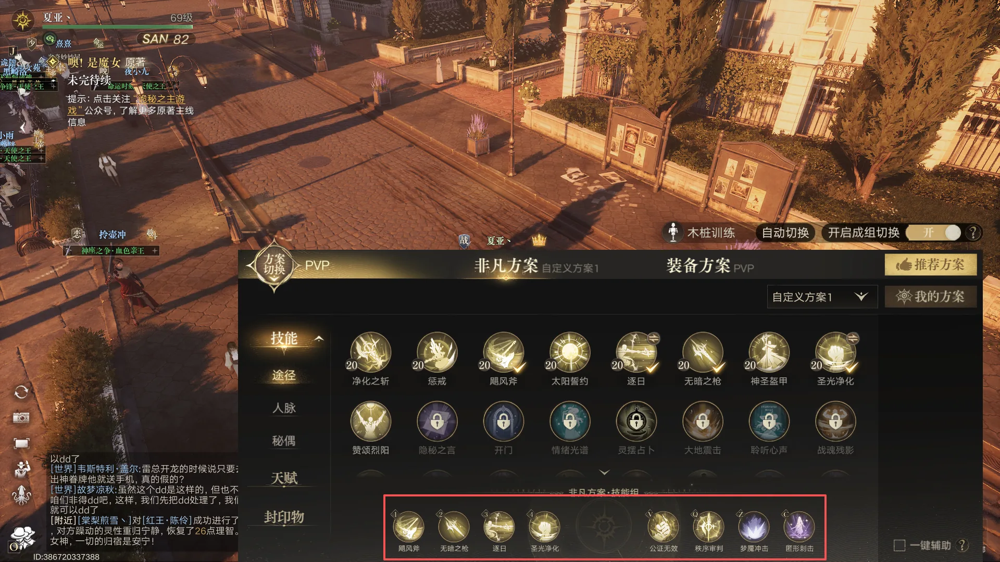
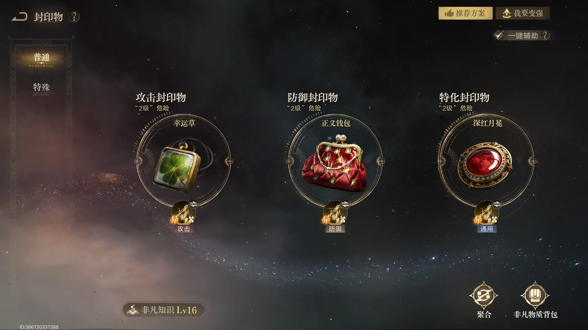
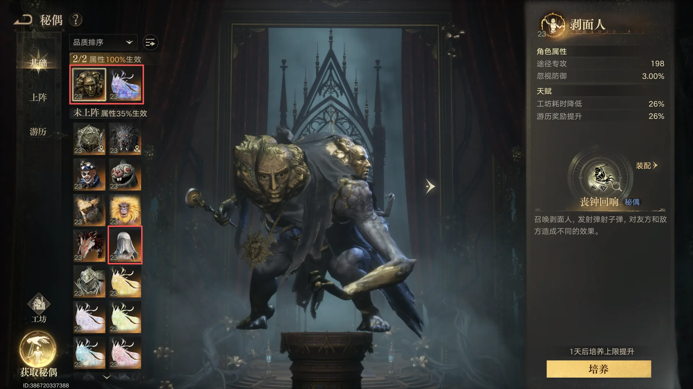
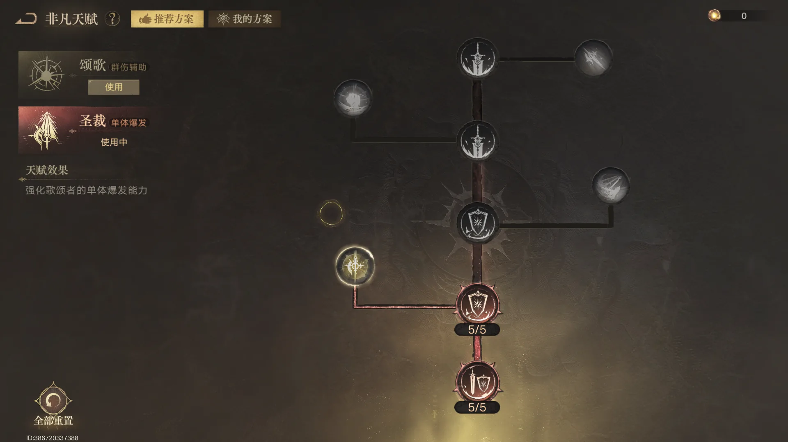

装备与属性
先确定套装和基础属性，再根据自身养成决定继续堆输出，还是把资源留给团队功能。

三件套优先，遇到胸针冲突可先保两件
64 装等开放三件套后，优先凑齐三件套效果。如果其中一件与胸针或红色胸针冲突，暂时只保留两件套也可以，先保证当前方案能稳定成型。
属性按输出与生存分开看
输出属性以穿刺、暴击、攻击为主。穿刺建议至少达到 1500，再继续补攻击和暴击。防御端以格挡为主，格挡越高，越能承担持续换血和拉扯中的压力。
技能组与团队职责
6V6 与 GVG 的技能选择不同，歌颂者的价值也不应只按个人输出计算。

逐日只作为 6V6 标配
逐日可作为 6V6 的固定选择；其他 GVG 场景更建议替换为净化之斩。这样能把技能栏留给更符合团战节奏的功能。
净化之斩的核心是阻断战复
歌颂者具备净化尸体的能力，常被称为“烧尸体”。目标是阻止对方治疗职业通过战复迅速补回即时战力。势力战地图较大，被净化后从复活点重返前线需要时间，因此除了输出，也要主动关注残局里的尸体处理。
养成不足时，优先做功能位
人脉与秘偶技能当前优先考虑梦魇冲击和隐匿刺击。若技能等级暂时不够，人脉技能可换成蘑菇，隐匿刺击可换为控制技能。账号基础较弱时，比起硬追输出，更推荐多带控制、积极烧尸体，为团队创造收益。
封印物
常规方案按攻击、防御和特化三条线选择；面具流属于需要操作支撑的变体。

常规搭配
攻击封印物推荐幸运草；面具也可选择，但更依赖个人操作。防御封印物推荐正义钱包，特化封印物选择深红月冕。
小号与 6V6 的替代思路
养成较低时，攻击可带斧子，防御带纸人，特化带布偶。6V6 也可以沿用截图中的方案；另一套面具加神灯流兼顾爆发、技能刷新和保命，但更适合有愚者配合、能抵消神灯负面效果的队伍。
秘偶
先确定上阵收益，再规划抽取顺序，避免把资源分散到短期难以使用的秘偶上。

上阵与抽取顺序
上阵推荐剥面人与星之虫守秘，这两个组合可提供四攻。抽取优先考虑剥面人、星之虫守秘、异化赛琳娜；赛琳娜作为主要使用对象时，达到 20 阶后可解锁第三阶段。
非凡天赋
天赋选择以场景与账号能力为准，低养成时统一走更稳定的团队向配置。

6V6 带领歌，其余场景带圣裁
6V6 可以统一带领歌；其他场景更建议选择圣裁。养成较低的账号则可以全部统一带领歌，以更稳定的功能收益参与团队。